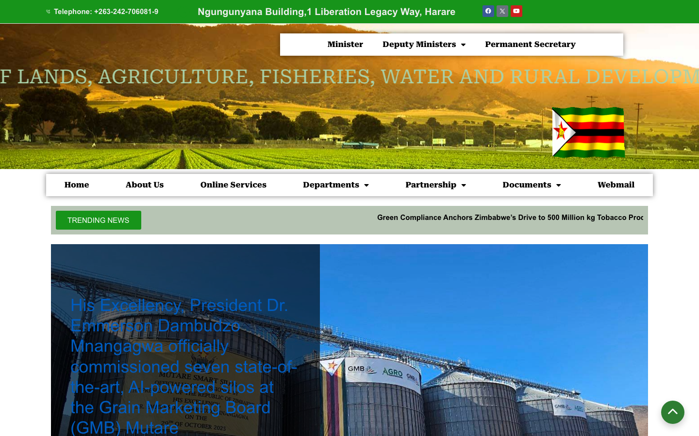

Overview
| Domain | agric.gov.zw |
|---|---|
| Category | government |
| Sector tags | agriculture |
| Theme | egovt |
| Tranco rank | — |
| WP detection score | 100 / 100 |
| WP version | 6.4.3 |
| CDN | — |
| IP | 197.221.249.47 |
| Homepage size | 573 KB |
| Verified at | 2026-05-01T12:32:28.619950+00:00 |
Hosting fingerprint
| Host panel | unknown |
|---|---|
| Server header | Apache/2.4.41 (Ubuntu) |
| TLS cert issuer | — |
| Reverse PTR | 16.47.telone.co.zw |
no positive panel signals
Plugins detected (26)
WordPress signals
| Signal | Weight |
|---|---|
| meta_generator_wp | +30 |
| link_header_wp_api | +20 |
| wp_content_path | +15 |
| wp_includes_path | +15 |
| wp_login_200 | +10 |
| readme_html_wp | +8 |
| plugin_path | +5 |
| theme_path | +5 |
| xmlrpc_present | +5 |
Discovery sources
| Source | Hint |
|---|---|
| cc-cdx | CC-MAIN-2026-17 |